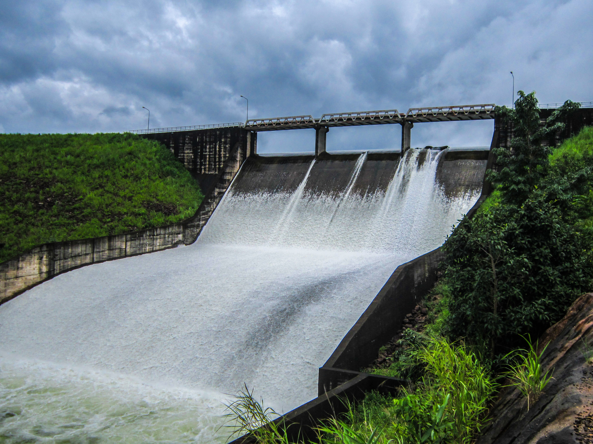
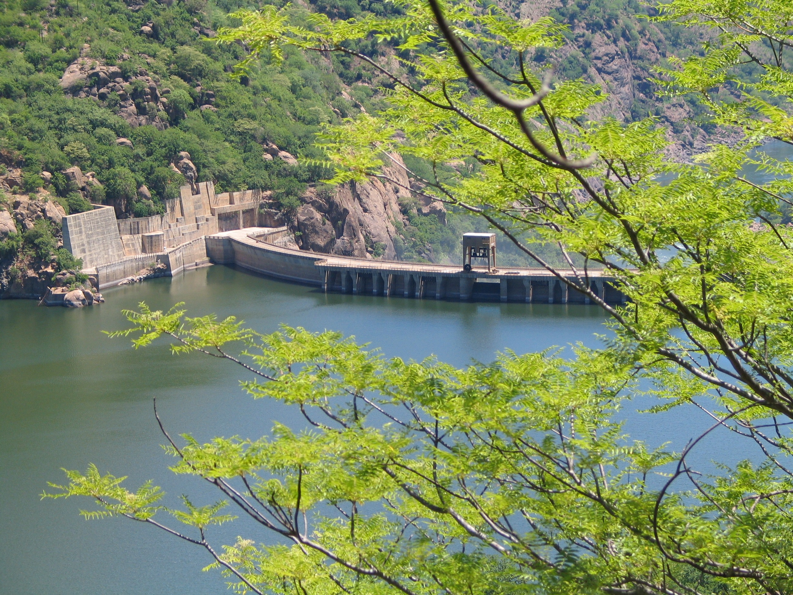
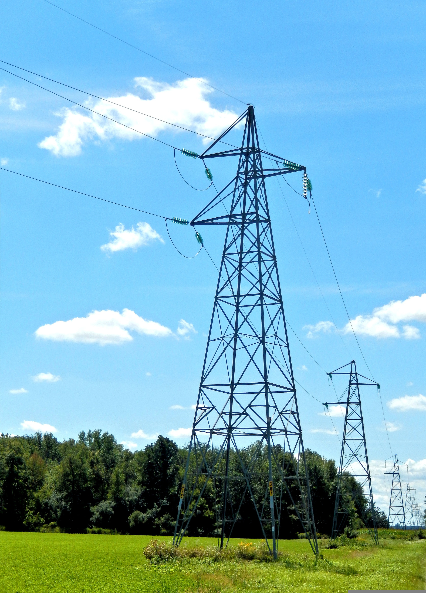

What is Hydro Power
Hydro Power is a renwable energy source that uses moving water to generate electricity. This is usually done by storing water in a dam and then releasing it through turbines. As the water moves, it spins the turbines which then power generators to produce electricity. Hydro energy is one of the oldest and most reliable forms of renewable power, and it can supply large amounts of electricity without burning fossil fuels.
The benefits of Hydro Energy
- Renewable Source:It uses the natural cycle, so the source is constantly renewed.
- Low Emissions:Hydro power produces electricity without creating harmful air pollution.
- Reliable Energy:It can provide a steady and dependable source of power.
- Energy Storage:Dams can store water and release it when electricity demand is higher.
Practical tips for your home
Even if you cannot produce hydro electricity at home, you can still support it by choosing renewable energy tariffs from your supplier. Saving water and electricity also helps reduce pressure on energy systems overall. Simple actions like turning off unused appliances, using energy efficient devices and being more aware of daily energy use can all support a more sustainable future.

How it works
Flowing water turns turbines to make electricity.

Hydro station
Dams and power stations help control and generate energy.

Clean energy
Hydro power helps reduce reliance on fossil fuels.